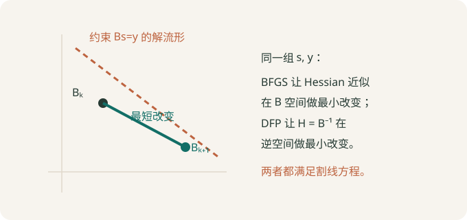

6.1.1 BFGS 方法的性质：割线方程、变分推导与正定性
牛顿法每步求解 Bₖpₖ=−gₖ，其中 Bₖ 是 Hessian 近似。BFGS 不重新计算 Hessian，而是用对称矩阵在满足割线方程的前提下最小改变上一步的 Bₖ（或逆近似 Hₖ）。只要曲率条件 sₖᵀyₖ>0 成立，更新后的矩阵仍然对称正定。
从牛顿法到割线方程
考虑无约束问题 minimize f(x)，x∈ℝⁿ，f 二阶连续可微。牛顿步由 Hessian Bₖ=∇²f(xₖ) 定义：Bₖpₖ=−gₖ。若把 Bₖ 换成对称的近似矩阵，并保证它确实反映目标函数的曲率，就得到拟牛顿法。
在第 k 步记位移 sₖ=xₖ₊₁−xₖ，梯度差 yₖ=gₖ₊₁−gₖ。对二阶连续可微函数做一阶 Taylor 展开 ∇f(xₖ+s)≈∇f(xₖ)+∇²f(xₖ)s。令 s=sₖ，并希望近似矩阵 Bₖ₊₁ 复现这一线性关系，就得到割线方程 Bₖ₊₁sₖ=yₖ。对逆近似 Hₖ₊₁=Bₖ₊₁⁻¹ 则是 Hₖ₊₁yₖ=sₖ。
当 f 是二次函数 f(x)=½xᵀQx−bᵀx 时，梯度差恰为 yₖ=Qsₖ，割线方程等价于要求 Bₖ₊₁sₖ=Qsₖ；如果这一关系对 n 个线性无关的方向都成立，Bₖ₊₁ 只能等于 Q，算法在 n 步内终止。一般非线性函数没有固定的 Q，割线方程只约束沿 sₖ 一个方向的作用。
最后一条 曲率条件 sₖᵀyₖ>0 是正定性的关键。若线搜索满足 Wolfe 条件（尤其第二条件 gₖ₊₁ᵀpₖ≥c₂gₖᵀpₖ），则 sₖᵀyₖ=gₖ₊₁ᵀsₖ−gₖᵀsₖ≥(c₂−1)gₖᵀsₖ>0 自动成立，因为 gₖᵀsₖ<0。
最小改变的变分原理
割线方程只给出 n 个标量约束，而对称矩阵有 n(n+1)/2 个自由度，解不唯一。为了得到确定的更新，附加一个原则：在满足对称性和割线方程的所有矩阵中，选取“离 Bₖ 最近”的那个。距离用加权 Frobenius 范数度量，并取权重为 Bₖ 本身的可逆因子（这正是 BFGS 的来源）。
等价地，可以把问题写成：在对称、B s=y 两个约束下最小化 ‖W^{1/2}(B−Bₖ)W^{−1/2}‖_F，其中 W 的权重由 average Hessian Ḡ=∫₀¹∇²f(xₖ+tsₖ)dt 决定。若近似认为 Ḡ 可用 Bₖ 代替，最小改变解的闭式就是 BFGS 更新。
这条推导说明 BFGS 不是凭空选择的公式，而是“最少改变 + 满足割线方程”的唯一解。DFP 更新来自对逆矩阵做同样的最小改变（用 Hₖ 的加权范数），两者互为对偶。

BFGS 与 DFP 更新公式
设 ρₖ=1/(yₖᵀsₖ)。记 Vₖ=I−ρₖyₖsₖᵀ。下面同时给出 Hessian 近似 B 与逆近似 H 的两组更新。
DFP（H 空间最小改变）：
BFGS（B 空间最小改变，在 H 空间的等价形式）：
若改用 B 直接书写，BFGS 就是熟知的“秩二”形式：
把 BFGS 与 DFP 的公式对齐可以看出：把 (s,y) 互换、同时把 H 与 B 互换，一个公式就变成另一个。这一对偶结构是 6.3 节 Broyden 族的起点。
正定性与遗传对称
定理（Nocedal & Wright, Theorem 6.1的 BFGS 部分）。设 Bₖ 对称正定，且更新由上述公式产生，sₖᵀyₖ>0。则：
（1）割线方程 Bₖ₊₁sₖ=yₖ 成立；（2）Bₖ₊₁ 对称；（3）Bₖ₊₁ 正定。对逆近似 Hₖ₊₁ 的 BFGS 更新，同样的三条结论成立。
证明骨架（逆形式，更简洁）。对任意向量 z 与逆形式更新，展开二次型：
右端两项都非负（ρₖ>0 来自曲率条件，Hₖ 正定使第一项非负）。若对某个 z≠0 有 zᵀHₖ₊₁z=0，则第一项为零要求 Vₖz=0，而第二项为零要求 sₖᵀz=0。把 sₖᵀz=0 代回 Vₖz=z−ρₖyₖ(sₖᵀz)=z，于是 Vₖz=z=0，与 z≠0 矛盾。因此 Hₖ₊₁ 严格正定。对称性由 VₖᵀHₖVₖ 与 ρₖsₖsₖᵀ 两部分都对称得出。
割线方程同样可直接代入验证：由 Vₖ 的定义得 Vₖyₖ=yₖ−ρₖyₖ(sₖᵀyₖ)=0，于是 Hₖ₊₁yₖ=VₖᵀHₖ(0)+ρₖsₖ(sₖᵀyₖ)=sₖ。这一行计算同时解释了为什么曲率条件 sₖᵀyₖ>0 是必需的：ρₖ=1/(sₖᵀyₖ) 必须为正。
需要强调：正定性完全依赖曲率条件 sₖᵀyₖ>0。若该条件不成立，BFGS 公式的分母为负或零，正定性不再有保证，更新甚至可能使矩阵变得不定。因此工程实现会在线搜索中强制 Wolfe 条件，或在 sₖᵀyₖ 过小时跳过更新（阻尼 / 跳过策略），这些属于算法工程选择，不是本章定理的结论。
二维可复现算例
取正定二次 f(x)=½xᵀQx，Q=[[3,1],[1,3]]，最优解 x*=(0,0)。起点 x₀=(1,0)，则 g₀=Qx₀=(3,1)。取 H₀=I，沿 p₀=−g₀ 做精确线搜索：
g₀ᵀg₀=10，Qp₀=Q(−3,−1)=(−10,−6)，故 p₀ᵀQp₀=(−3)(−10)+(−1)(−6)=36，g₀ᵀp₀=−10，于是 α₀=10/36=5/18。x₁=x₀+α₀p₀=(1/6,−5/18)，g₁=(2/9,−2/3)。
于是 s₀=(−5/6,−5/18)，y₀=(−25/9,−5/3)，s₀ᵀy₀=25/9>0，满足曲率条件。用 BFGS 逆更新得到 H₁=[[0.5278,−0.3796],[−0.3796,0.7994]]（保留四位小数）。直接代入可验证割线方程 H₁y₀=s₀ 成立，且 H₁ 的两个顺序主子式都为正（0.5278 与 det H₁=0.2778）。
第二步 p₁=−H₁g₁，再做精确线搜索得 α₁=0.45，于是 x₂=(0,0)=x*。对这个二维正定二次问题，BFGS 在两次迭代内终止。这是精确线搜索下有限终止的一个教学实例，不是一般非线性函数上的性能结论。
二维正定二次问题上 BFGS 的两步轨迹：第一步沿初始逆 Hessian 方向 p₀，更新得到 H₁ 后第二步沿 p₁ 直达最优解。椭圆为等值线，颜色深浅表示目标值下降。
交互：曲率条件如何决定正定性
固定 Hₖ=I 与 s=(1,0)ᵀ，把 y=(a,b)ᵀ 当作滑块控制。拖动两个滑块观察曲率条件 sᵀy=a>0 与更新后 Hₖ₊₁ 的正定性：当 a≤0 时更新公式会产生非正定矩阵（甚至不可用）。
实时模型计算
Python：验证割线方程与正定性
下面的程序只依赖标准库。它实现逆形式 BFGS 更新，重现上面的二维算例，并断言割线方程 H₁y₀=s₀、det H₁=0.2778 与两步终止都成立。
"""Verify the BFGS inverse update: secant equation and positive definiteness."""
Q = ((3.0, 1.0), (1.0, 3.0))
def matvec(M, v):
return (M[0][0]*v[0] + M[0][1]*v[1], M[1][0]*v[0] + M[1][1]*v[1])
def dot(u, v):
return u[0]*v[0] + u[1]*v[1]
def sub(u, v):
return (u[0]-v[0], u[1]-v[1])
def bfgs_H(H, s, y):
rho = 1.0 / dot(s, y) # requires s'y > 0
# H+ = (I - rho*s*y^T) H (I - rho*y*s^T) + rho*s*s^T, expanded
Hy = matvec(H, y)
yHy = dot(y, Hy)
out = [[0.0, 0.0], [0.0, 0.0]]
for i in range(2):
for j in range(2):
out[i][j] = (H[i][j] - rho*(s[i]*Hy[j] + Hy[i]*s[j])
+ rho*rho*yHy*s[i]*s[j] + rho*s[i]*s[j])
return out
def run():
x, H = (1.0, 0.0), [[1.0, 0.0], [0.0, 1.0]]
H1 = None
for k in range(2):
g = matvec(Q, x)
Hg = matvec(H, g)
p = (-Hg[0], -Hg[1])
a = -dot(g, p) / dot(p, matvec(Q, p))
x_new = (x[0] + a*p[0], x[1] + a*p[1])
g_new = matvec(Q, x_new)
s, y = sub(x_new, x), sub(g_new, g)
if dot(s, y) > 1e-12:
H = bfgs_H(H, s, y)
if k == 0:
H1 = H # inverse Hessian after the first update
x = x_new
return x, H1
if __name__ == "__main__":
x_star, H1 = run()
assert abs(x_star[0]) < 1e-12 and abs(x_star[1]) < 1e-12
assert abs(H1[0][0]*H1[1][1] - H1[0][1]*H1[1][0] - 0.2777777) < 1e-6
print("x* =", x_star, "det H1 =", H1[0][0]*H1[1][1]-H1[0][1]*H1[1][0])程序只处理一个固定的二维正定二次问题，用来核对割线方程与终止结论；它不是通用拟牛顿求解器，也不覆盖不精确线搜索、大尺度缩放或数值稳定性。具体的 H₁ 数值由独立计算得到，属教学示意。
这一页的边界
BFGS 的正定性和割线方程依赖 sₖᵀyₖ>0；在一般非线性函数上它不保证全局收敛，也不保证每一步都下降。全局收敛需要线搜索条件（如 Wolfe）或信赖域机制配合，局部超线性收敛还需要额外的假设，这些在 6.4 节讨论。把 BFGS 当成“自带收敛保证的黑盒”是常见的过度解读。